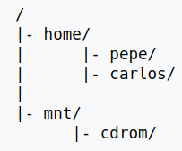
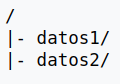
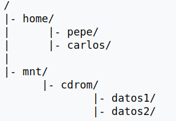

Se denomina montar, en informática, a la acción de integrar un sistema de archivos alojado en
un determinado dispositivo dentro del árbol de directorios de un sistema operativo.
En los sistemas operativos Unix/Linux solamente existe un único árbol de directorios donde se organizan los
archivos. No existe el concepto de unidad de disco propia de sistemas operativos tales como MS-DOS o Windows.
Cada dispositivo de disco (disco duro, CD-ROM, pendrive, etc.) aloja un sistema de archivos que,
conceptualmente, no es más que un árbol de directorios. Dicho árbol puede ser integrado en el árbol único de
Unix utilizando un punto de montaje. El punto de montaje es cualquier directorio a partir del
cual se
visualizará el sistema de archivos montado. Si el punto de montaje contenía ficheros, estos desaparecerán, para
visualizar los del dispositivo montado.
Actualmente el sistema de archivos NTFS de Microsoft utilizado en Windows también soporta puntos de montaje de
volúmenes, asignándole letras estándares de dispositivos, (G:, F:), o carpetas que estén situadas dentro de un
volumen ntfs.
Por ejemplo, supongamos que un sistema de archivos Unix consta de los siguientes directorios:

Y supongamos que tenemos un dispositivo CD-ROM que contiene los siguientes directorios:

Si elegimos /mnt/cdrom como punto de montaje, el resultado sería el siguiente árbol:

Orden mount
mount es un comando de sistemas basados en Unix que se utiliza para montar dispositivos y particiones para su
uso por el sistema operativo. Las sintaxis de esta orden es:
mount -t tipo -o opciones dispositivo punto_de_montaje
por ejemplo:
mount -t iso9660 /dev/hdb0 /mnt/cdrom
fstab
El fichero fstab (file systems table) se encuentra comúnmente en sistemas Unix (en el directorio /etc/) como
parte de la configuración del sistema. Lo más destacado de este fichero es la lista de discos y particiones
disponibles. En ella se indica como montar cada dispositivo y qué configuración utilizar.
La estructura de las instrucciones es de 6 columnas separadas por espacios o tabuladores:
dispositivo: es el directorio lógico que hace referencia a una partición o recurso.
fd0 Primera unidad de disquetes (a: en sistemas MS-DOS y Windows).
fd1 Segunda unidad de disquetes (b: en sistemas MS-DOS y Windows).
hda Primer disco duro IDE (Primary Master).
hda0 Primera partición del primer disco duro IDE (Primary Master).
hda1 Segunda partición del primer disco duro IDE (Primary Slave).
hdb0 Primera partición del segundo disco duro IDE (Secondary Master).
hdb1 Segunda partición del segundo disco duro IDE (Secondary Slave).
sda Primer disco duro SCSI.
sda1 Primera partición del primer disco duro SCSI.
sdb Primera unidad de llave usb (Memoria USB).
sdb4 Cuarta partición del segundo disco duro SCSI.
scd0 Primera unidad de CD-ROM SCSI.
scd1 Segunda unidad de CD-ROM SCSI.
sga Primer dispositivo genérico SCSI (scanner, etc.).
sgb Segundo dispositivo genérico SCSI.
sg0 Primer dispositivo genérico SCSI en sistemas nuevos.
sg1 Segundo dispositivo genérico SCSI en sistemas nuevos.
punto_de_montaje: es la carpeta en que se proyectarán los datos del sistema de archivos.
sistema de archivos: el algoritmo que interpreta los ficheros
auto (intenta descubrir automáticamente el sistema de archivos).
iso9660 (sistema de archivos de los CD y DVD).
ext2 (sistema de archivos muy extendido en máquinas Linux).
ext3 (igual que ext2 pero además añade journaling).
ext4 (introdujo significativas mejoras respecto a ext3)
reiserfs (otro sistema muy utilizado en máquinas Linux).
msdos (para dispositivos que usen FAT12 o FAT16).
vfat (para dispositivos que usen FAT32).
ntfs (sistema de archivos NTFS de Windows NT, XP, etc.).
smbfs (sistema de archivos de Samba).
nfs (sistema de archivos de red NFS).
hfs y hfsplus (acceden a sistemas de archivos de Apple Macintosh).
opciones: es el lugar donde se especifican los parámetros que mount utilizará para montar
el dispositivo, deben estar separadas por comas.
auto / noauto Con la opción auto, el dispositivo será montado automáticamente
durante
el inicio o en
caso de que el comando mount -a sea ejecutado. auto es el valor por defecto. Si no se desea que el
dispositivo se monte automáticamente, se deberá substituir por noauto.
dev / nodev Interpretar / no interpretar dispositivos especiales de bloques en el
sistema de archivos.
Los dispositivos especiales de bloques son similares a discos (donde se puede acceder a los datos dado
un
número de bloque, y p.ej. tiene sentido tener un caché de bloques). Todos los otros dispositivos son
ficheros especiales de caracteres. Hace tiempo la distinción era diferente: la E/S a un fichero especial
de caracteres sería sin búfer, y a un fichero especial de bloques, con búfer.
exec / noexec exec permite ejecutar binarios que están en la partición, mientras que
noexec lo impide.
noexec puede resultar útil en una partición que contenga binarios que se deseen ejecutar en el sistema,
o
que no deban ser ejecutados. Este podría ser el caso de la partición de Windows.
ro Montar para sólo lectura.
rw Montar el sistema de archivos para lectura/escritura. Utilizando esta opción,
muchos
nuevos usuarios
confusos, por no poder escribir en sus discos o particiones de Windows, pueden solucionar el problema.
sync / async Esta opción indica la manera en que se debe realizar la entrada y salida
del sistema de
archivos. sync especifica que se realice de manera síncrona. Para verlo en un ejemplo de un fstab,
nótese
que esta opción aparece en la unidad de discos flexibles. En particular sirve, si se está escribiendo en
una unidad con la opción activada, para que los cambios sean realizados físicamente en el dispositivo a
la
vez que se invoca el comando correspondiente.
suid / nosuid Permite / bloquea la operación sobre los bits suid y sgid.
user / nouser Permite a cualquier usuario montar el sistema de archivos. Implica
directamente las
opciones noexec, nosuid y nodev a menos que se especifiquen otras. Si se utiliza la opción nouser, solo
el
usuario root podrá montar el sistema de archivos.
defaults Utiliza las opciones por defecto: rw,suid,dev,exec,auto,nouser,async.
nofail No devuelve error si no se puede montar el dispositivo.
dump-freq: es el comando que utiliza dump para hacer respaldos del sistema de archivos.
Puede tomar dos valores: 0 y 1. Con 0 se indica que no se debe backupear, con 1 que sí se haga. Lógicamente,
depende de que se tenga instalado y configurado dump, por lo que en la mayoría de los casos este campo es 0..
pass-num: indica el orden en que la aplicación fsck revisará la partición en busca de
errores durante el inicio. Las posibilidades son 0, 1 y 2. El 0 indica que el filesystem no debe ser
chequeado, mientras que el 1
y el 2 le dicen a fsck que sí lo chequee. La diferencia es que el 1 representa una prioridad mayor que el 2,
por lo que debe utilizarse para el sistema raíz y el 2 para el resto de los sistemas de archivos.